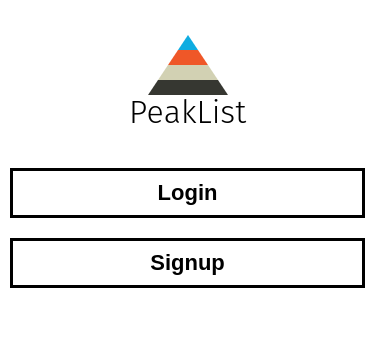
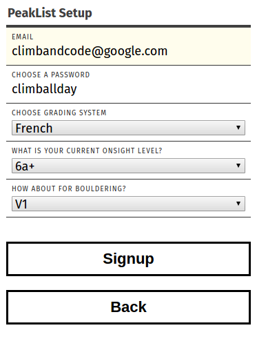
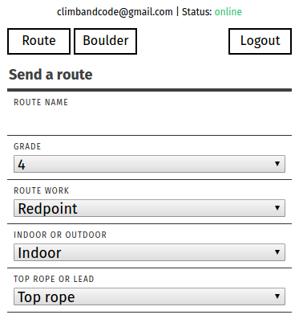
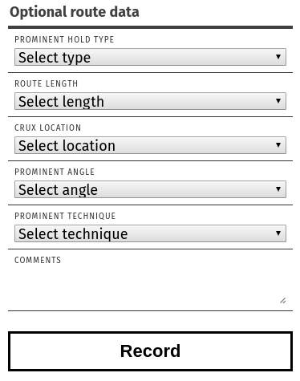
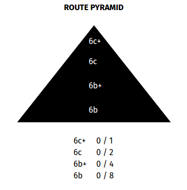
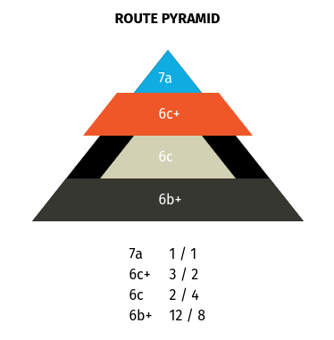
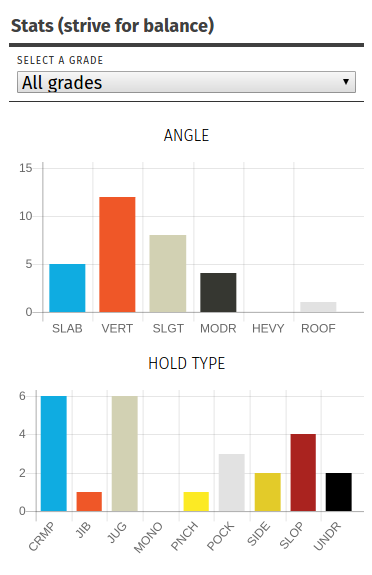
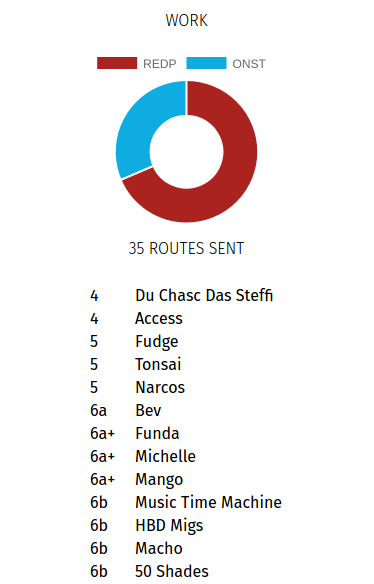
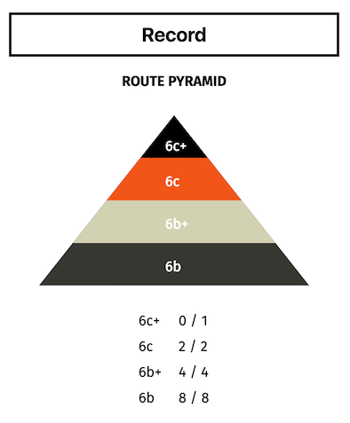
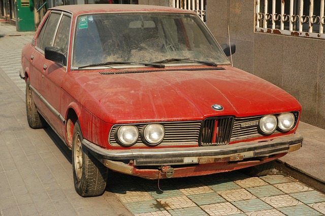

PeakList is a climbing stats tracker and toy project of mine. Whenever you finish a route, just log it in PeakList and you'll be shown some useful charts and graphs that help you improve and diagnose the problems in your climbing. If you use it while it's offline it will sync routes you log next time you're online.
Check it out at https://beatobongco.com/PeakList/ or just proceed to the walkthrough section.
Warning! It's still in development. The main functions should work well but you may encounter some issues with offline capabilities and syncing.
This section will go though each of the app's screens and features so you don't have to.
This is the first screen you see, a simple login/signup landing page. Since we don't have an account, let's sign up first.
You'll be greeted by a basic signup form. Don't worry about inputting your email. There's no email verification and I don't use your email for anything. Promise!
Here you can choose your grading system (French or Yosemite Decimal) and on-sight grade for both roped climbing and bouldering.
Let's press "Sign up" to confirm our details.
After that you can start logging routes. You're required to input the name of the route, grade, work (redpoint, flash, on-sight), whether it was indoor or outdoor, and top rope or lead. You can also switch between logging roped climbing and boulders on the top left corner.
Scrolling down, you also have optional characteristics:
And you can hit "Record" to log your climb.
Scroll down and you should see a route pyramid. It's a useful tool for climbing progression. I explain more about it in the climbing concepts section.
Because our new account doesn't have data yet the pyramid should be blank. Below that you have some useful charts and graphs related to the climbing data you've entered. I'll use the data I've logged myself from this point on just to show you how it looks.
 You can filter the data by grade.
You also have a list of routes you've climbed at the bottom. One of my to-do's is to make them display their characteristics when clicked.
And there you have it! That's the PeakList app in a nutshell.
Warning! This section can get a little technical with climbing terms and such. I'll try my best to word it for a general audience.
I first got the idea for PeakList while reading some books on climbing which taught me the concepts below.
While reading Self-Coached Climber I came across the concept of the route pyramid. The book says that well-rounded climbers have strong bases of lower graded routes, uniformly thinning up to the highest grade they can reach, thus the pyramid structure.
Making a route pyramid is easy. You just have to know your onsight grade - a grade you are confident you can finish on your first try. Let's say that's 6a+.
You start with a pyramid divided into four parts. The tip is your onsight grade + 4, the second is onsight grade + 3, the third is +2, the base is +1. You must complete 1 route of the grade on the tip, 2 on the second, 4 on the third and 8 routes on the base.
Once you've filled up the whole thing, your pyramid is upgraded one level. All rungs are increased by 1 grade level and the base is discarded. Your old climbs still count. This is what a freshly upgraded pyramid looks like provided you exactly completed the above requirements, no more no less.
The animation is a nice little reward for all that hard climbing isn't it? ;)
It's possible your pyramid will look lopsided (like mine) if you logged many climbs of a grade level. Your aim should be to fix these imbalances.
I call the rest of the stats displayed at the bottom the "weakness finder". I was inspired by Performance Rock Climbing. Out of everything said on the book, one concept really stuck with me: the analogy of the rusty car.
It goes something like this: you have an old car that you fix up and bring to the race track. Since your car wont go faster than twenty miles an hour you start work on improving the engine. You work hard and eventually, your car can reach a higher top speed. You are happy. You keep working hard and your car's top speed keeps on increasing.
After a while though you notice that when your car reaches its top speed, turning becomes difficult and your car begins to wobble. Also, you notice that it becomes harder and harder to increase the top speed of you car even if you've been putting more work in the engine. How do you increase your car's performance? You've become good at working the engine but if you keep doing the same thing you'll be stuck in a plateau.
The answer is you work on the steering. This is called the "Weakest Link principle". It tells us that the quickest gains in performance comes from working on what you're bad at. That is the philosophy behind PeakList. It helps you improve your climbing by showing you the "holes in your game". If you notice big dips in the graph, strive to climb more routes of that type.
For example in my stats I don't have much experience with heavily overhung or roof routes. I need to climb on that angle more. I could also benefit from climbing routes with tiny jibs, monos and pinches.
The interesting thing about PeakList is it's all client-side and it's just hosted on GitHub Pages. Deploying is literally as easy as pushing to GitHub or copy-pasting to your own server.
I used Vue.js for this project. It's a simple but powerful library that helps me render components on the page based on the user's data. I've used it in the past to build my smart playlist Psyche.TV and I loved using it.
I liked the concept of Gridforms so much I decided to base the app's design on it. I went for a minimalist, mobile-first design.
I use PeakList in the gym so I wanted it as straightforward as possible: everything I need on the screen right off the bat. I didn't want any navigation elements that would interfere with the experience. While I'm climbing I just want to be ready to log my climbs. When resting, I just want to conveniently scroll down to see my stats to get an idea of what routes I should be working on.
The pretty charts are from Chart.js.
I used service workers to cache the app assets on the user's browser so the page would load even if there's no internet connection. I didn't want dive deep into service workers yet so to make it easy for me I used the command-line interface of sw-precache.
I used Firebase to check whether the user is on or offline. When an internet connection is detected, it tries to sync whatever is on the app's TaffyDB instance with Firebase. It will only sync a non-empty database. Every time a user records a climb or upgrades his pyramid a backup is done. It will also update the TaffyDB instance every time new data is received by Firebase. If you have multiple tabs opened with PeakList running and with the same account logged in, you can record a route and you'll see all the tabs update. I think that's pretty rad.
I've open sourced PeakList on github! Check it out here.